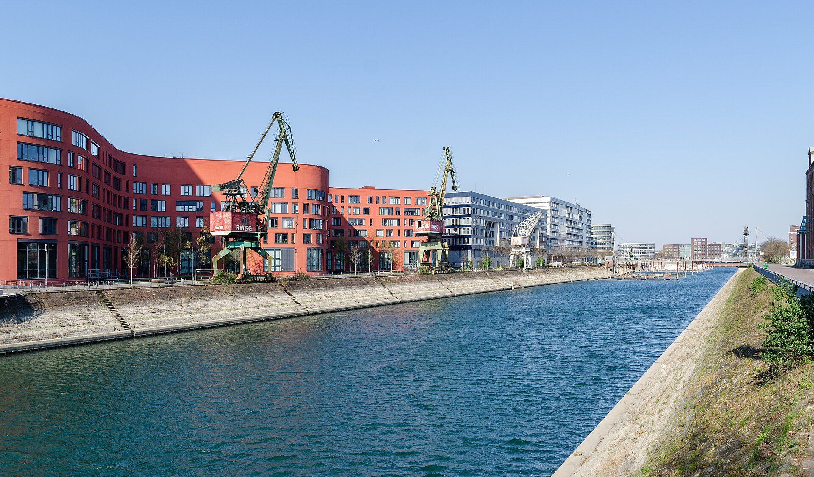
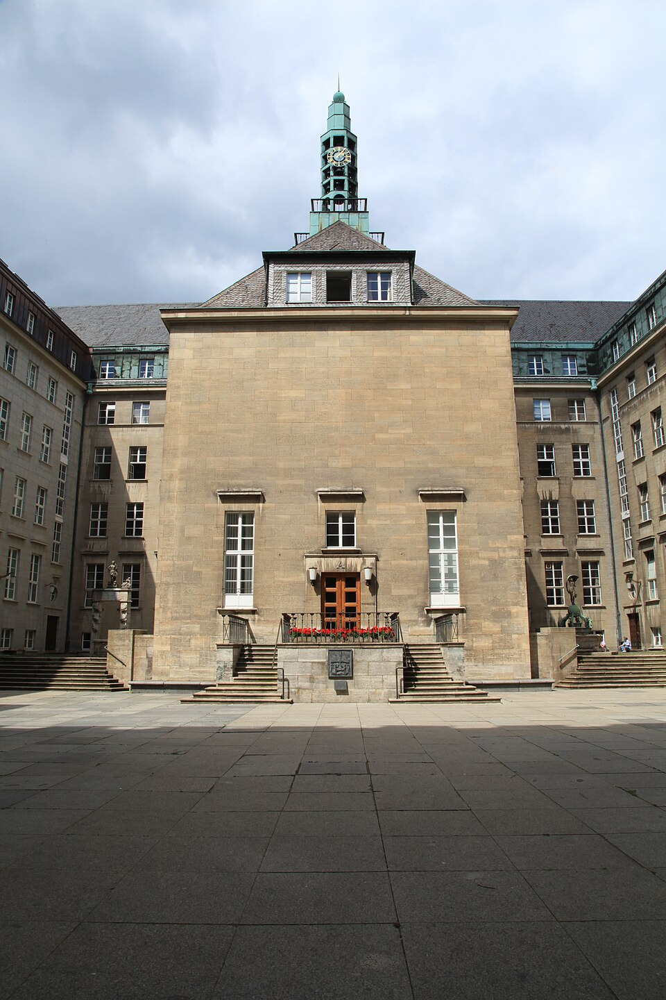

Dortmund · Phoenixsee
Neue Wege.
Neue Blicke.
Dein Revier.
Stadt am Wasser, markante Architektur und weite Blicke. Entdecke die vielen Seiten des Ruhrgebiets.
Ausflugsziele entdeckenHier bist du zuhause
Alles, was deinen Alltag leichter macht. Und alles, was unsere Stadt besonders macht. Entdecke neue Seiten, finde dein Anliegen und bleib verbunden.
Kurze Wege. Mehr Stadtleben.
Stadtportal-Demo mit Beispielinhalten. Kein offizielles Angebot einer Stadt.


Persönlich & digitalDein kurzer Weg ins Rathaus.Informiert bleiben
Was die Stadt bewegt, auf einen Blick.
Beispielmeldungen zur Veranschaulichung. Keine aktuellen Nachrichten.
Wischen, ziehen oder mit dem Mausrad blättern.
Einfach erledigt
Termin, Antrag oder die richtige Ansprechperson: Hier geht es zu den beispielhaften Serviceseiten dieses Entwurfs.
Für jede Lebenslage
Sechs Themenwelten. Viele Möglichkeiten, deine Stadt zu gestalten.
Für alle da
Mit Tastatur, Touch oder Maus: Du bestimmst, wie du dich durch die Seite bewegst. Bewegung wird an deine Geräteeinstellung angepasst.
Aus dem Stadtgeschehen
Hintergründe zu Kultur, Stadtentwicklung und dem Leben vor Ort. Beispielbeiträge ohne Bezug zu einer bestimmten Stadt.
Aus dem Veranstaltungskalender
Ideen für Begegnungen, Austausch und gemeinsame Erlebnisse. Diese Veranstaltungsbeispiele sind keine angekündigten Termine.
Themen entdecken